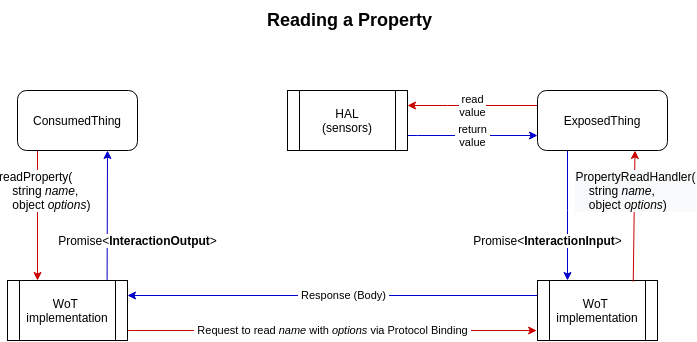
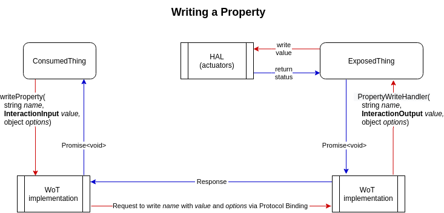
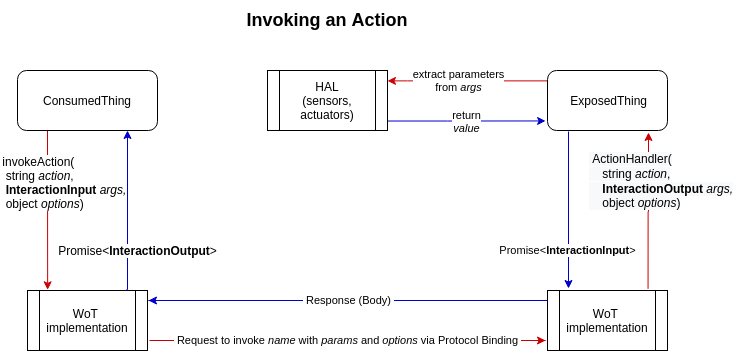

The main Web of Things (WoT) concepts are described in the WoT Architecture document. The Web of Things is made of entities (Things) that can describe their capabilities in a machine-interpretable Thing Description (TD) and expose these capabilities through the WoT Interface, that is, network interactions modeled as Properties (for reading and writing values), Actions (to execute remote procedures with or without return values) and Events (for signaling notifications).
Scripting is an optional "convenience" building block in WoT and it is typically used in gateways that are able to run a WoT Runtime and script management, providing a convenient way to extend WoT support to new types of endpoints and implement WoT applications such as Thing Directory.
This specification describes a programming interface representing the WoT Interface that allows scripts to discover, operate Things and to expose locally defined Things characterized by WoT Interactions specified by a script.
The specification deliberately follows the WoT Thing Description specification closely. It is possible to implement simpler APIs on top of this API, or implementing directly the WoT network facing interface (i.e. the WoT Interface).
This specification is implemented at least by the Thingweb project also known as node-wot, which is considered the reference open source implementation at the moment. Check its source code, including examples. Other, closed source implementations have been made by WG member companies and tested against node-wot in plug-fests.
Implementers need to be aware that this specification is considered unstable. Vendors interested in implementing this specification before it eventually reaches the Candidate Recommendation phase should subscribe to the repository and take part in the discussions.
then instantiating a software stack that implements the WoT Interface specified by the TD in order to serve requests for accessing the exposed Properties, Actions and Events,
This specification describes how to expose and consume Things by a script. Also, it defines a generic API for Thing discovery.
Typically scripts are meant to be used on bridges or gateways that expose and control simpler devices as WoT Things and have means to handle (e.g. install, uninstall, update etc.) and run scripts.
This specification does not make assumptions on how the WoT Runtime handles and runs scripts, including single or multiple tenancy, script deployment and lifecycle management. The API already supports the generic mechanisms that make it possible to implement script management, for instance by exposing a manager Thing whose Actions (action handlers) implement script lifecycle management operations.
Use Cases
The following scripting use cases are supported in this specification:
Optionally specify a timeout to the discovery process after which it is stopped/suppressed.
This specification describes the conformance criteria for the following classes of user agent (UA).
Due to requirements of small embedded implementations, splitting WoT client and server interfaces was needed. Then, discovery is a distributed application, but typical scenarios have been covered by a generic discovery API in this specification. This resulted in using 3 conformance classes for a UA that implements this API, one for client, one for server, and one for discovery. An application that uses this API can introspect for the presence of the consume(), produce() and discover() methods on the WoT API object in order to determine which conformance class the UA implements.
Implementations of this conformance class MUST implement the ThingDiscovery interface and the discover() method on the WoT API object.
These conformance classes MAY be implemented in a single UA.
This specification can be used for implementing the WoT Scripting API in multiple programming languages. The interface definitions are specified in [[!WEBIDL]].
The UA may be implemented in the browser, or in a separate runtime environment, such as Node.js or in small embedded runtimes.
Implementations that use ECMAScript executed in a browser to implement the APIs defined in this document MUST implement them in a manner consistent with the ECMAScript Bindings defined in the Web IDL specification [[!WEBIDL]].
Implementations that use TypeScript or ECMAScript in a runtime to implement the APIs defined in this document MUST implement them in a manner consistent with the TypeScript Bindings defined in the TypeScript specification [[!TYPESCRIPT]].
Fetching a TD given a URL should be done with an external method, such as the Fetch API or a HTTP client library, which offer already standardized options on specifying fetch details.
try {
let res = await fetch('https://tds.mythings.biz/sensor11');
// ... additional checks possible on res.headers
let td = await res.json();
let thing = new ConsumedThing(td);
console.log("Thing name: " + thing.getThingDescription().title);
} catch (err) {
console.log("Fetching TD failed", err.message);
}
Expanding a Thing Description
Note that [[WOT-TD]] allows using a shortened Thing Description
by the means of defaults and requiring clients to expand them with default values specified in
[[WOT-TD]] for the properties that are not explicitly defined in a given
TD.
To expand a TD given |td:ThingDescription|, run the following steps:
For each item in the TD default values table from [[!WOT-TD]], if the term is not defined in |td|, add the term definition with the default value specified in [[!WOT-TD]].
Validating a Thing Description
The [[!WOT-TD]] specification defines how a TD should be validated.
Therefore, this API expects the {{ThingDescription}} objects be validated before used as parameters. This specification defines a basic TD validation as follows.
To validate a TD given |td:ThingDescription|, run the following steps:
If |td| is not an object, [= exception/throw =] a
{{"TypeError"}} and abort these steps.
If any of the mandatory properties defined in [[!WOT-TD]] for
Thing
that don't have default definitions
are missing from |td|, [= exception/throw =] a
{{"TypeError"}} and abort these steps.
If JSON schema validation fails on |td|, [= exception/throw =] a
{{"TypeError"}} and abort these steps.
The WoT API object
Defines the API entry point exposed as a singleton and contains the API methods.
The WOT interface
[SecureContext, Exposed=(Window,Worker)]
interface WOT {
// methods defined in UA conformance classes
};
Browser implementations should use a namespace object such as navigator.wot. Standalone runtimes may expose the API object through mechanisms like require() or import.
Belongs to the WoT Consumer conformance class. Expects an |td:ThingDescription| argument and returns a {{Promise}} that resolves with a {{ConsumedThing}} object that represents a client interface to operate with the Thing. The method MUST run the following steps:
Return a {{Promise}} |promise:Promise| and execute the next steps in parallel.
If invoking this method is not allowed for the current scripting context for security reasons, reject |promise| with a {{SecurityError}} and abort these steps.
Run the validate a TD steps on |td|. If that fails, reject |promise| with {{SyntaxError}} and abort these steps.
Let |thing:ConsumedThing| be a new {{ConsumedThing}} object constructed from |td|.
Set up the WoT Interactions based on introspecting td as explained in [[!WOT-TD]] and [[!WOT-PROTOCOL-BINDINGS]]. Make a request to the underlying platform to initialize the Protocol Bindings.
Implementations encapsulate the complexity of how to use the
Protocol Bindings for implementing WoT interactions.
In the future elements of that could be standardized.
Belongs to the WoT Producer conformance class. Expects a |td:ThingDescription| argument and returns a {{Promise}} that resolves with an {{ExposedThing}} object that extends {{ConsumedThing}} with a server interface, i.e. the ability to define request handlers. The method MUST run the following steps:
Return a {{Promise}} |promise:Promise| and execute the next steps in parallel.
If invoking this method is not allowed for the current scripting context for security reasons, reject |promise| with a {{SecurityError}} and abort these steps.
Let |thing:ExposedThing| be a new {{ExposedThing}} object constructed with |td|.
Belongs to the WoT Discovery conformance class. Starts the discovery process that will provide {{ThingDescription}} objects for Thing Descriptions that match an optional |filter:ThingFilter| argument of type {{ThingFilter}}. The method MUST run the following steps:
If invoking this method is not allowed for the current scripting context for security reasons, [= exception/throw =] a {{"SecurityError"}} and abort these steps.
Construct a ThingDiscovery object |discovery:ThingDiscovery| with |filter|.
As specified in [[WOT-TD]], WoT interactions extend DataSchema
and include a number of possible Forms, out of which one is selected
for the interaction. The
Form contains a `contentType` to describe the data.
For certain content types, a DataSchema is defined, based on
JSON schema, making possible to represent these contents as
JavaScript types and eventually set range constraints on the data.
The InteractionInput type
typedef any DataSchemaValue;
typedef (ReadableStream or DataSchemaValue) InteractionInput;
Belongs to the WoT Consumer conformance class and represents the
WoT Interaction data provided by application scripts to the UA.
DataSchemaValue is an
ECMAScript value that is accepted for DataSchema defined in [[WoT-TD]]
(i.e. null, boolean, number, string, array, or object).
{{ReadableStream}} is meant to be used for WoT Interactions that
don't have a DataSchema in the Thing Description, only a
{{Form}}'s `contentType` that can be represented by a stream.
The algorithms in this document specify how exactly input data is used in
WoT Interactions.
The InteractionOutput interface
Belongs to the WoT Consumer conformance class.
An {{InteractionOutput}} object is always created by the implementations
and exposes the data returned from WoT Interactions to application
scripts.
This interface exposes a convenience function which should work in
the vast majority of IoT use cases: the
value() function. Its implementation
will inspect the data, parse it if adheres to a DataSchema, or
otherwise fail early, leaving the underlying stream undisturbed so
that application scripts could attempt reading the stream themselves, or
handling the data as {{ArrayBuffer}}.
The schema attribute represents the DataSchema
(defined in [[WoT-TD]]) of the payload as a {{JSON}} object, initially `null`.
The [[\value]] internal slot represents the parsed value of
the WoT Interaction, initially `undefined` (note that `null` is a
valid value).
The value() function
Parses the data returned from the WoT Interaction and returns a
value with the type described by the DataSchema of the interaction
if that exists, or by the `contentType` of the Form used for the
interaction. The method MUST run the following steps:
Return a {{Promise}} |promise:Promise| and execute the next steps
in parallel.
If the value of the [[\value]]internal slot is not
`undefined`, resolve |promise| with that value and abort these steps.
If the value of the |data| property is not a {{ReadableStream}} or if
|dataUsed| is `true`, or if |form| is `null` or if |schema| or its
|type| are `null` or `undefined`,
reject |promise| with {{NotReadableError}} and abort these steps.
If |form|'s |contentType| is not `application/json` and if a mapping is
not available in the Protocol Bindings from |form|'s |contentType|
to [JSON-SCHEMA], reject |promise| with {{NotSupportedError}} and
abort these steps.
Let |reader| be the result of
getting a reader from |data|. If that threw an exception, reject
|promise| with that exception and abort these steps.
Let |bytes| be the result of
reading all bytes from |data| with |reader|.
Set |dataUsed| to `true`.
If |form|'s |contentType| is not `application/json` and if a mapping is
available in the Protocol Bindings from |form|'s |contentType|
to [JSON-SCHEMA], transform |bytes| with that mapping.
Let |json| be the result of running parse JSON from bytes on
|bytes|. If that throws, reject |promise| with that exception and
abort these steps.
Set [[\value]] to the result of running check data schema
on |json| and |schema|. If that throws, reject |promise| with that
exception and abort these steps.
Return a {{Promise}} |promise:Promise| and execute the next steps
in parallel.
If |data| is not {{ReadableStream}} or if |dataUsed| is `true`,
reject |promise| with {{NotReadableError}} and abort these steps.
Let |reader| be the result of
getting a reader from |data|. If that threw an exception, reject
|promise| with that exception and abort these steps.
Let |bytes| be the result of
reading all bytes from |data| with |reader|.
Set |dataUsed| to `true`.
Let |arrayBuffer| be a new {{ArrayBuffer}} whose contents are |bytes|.
If that throws, reject |promise| with that exception and abort these steps.
Resolve |promise| with |arrayBuffer|.
The check data schema algorithm
To run the check data schema steps on |payload| and |schema:object|,
Let |type| be |schema|'s |type|.
If |type| is `"null"` and if |payload| is not `null`,
throw {{TypeError}} and abort these steps, otherwise return `null`.
If |type| is `"boolean"` and |payload| is a falsey value or its byte
length is 0, return `false`, otherwise return `true`.
If |type| is `"integer"` or `"number"`,
If |payload| is not a number, throw {{TypeError}} and abort these steps.
If |form|'s |minimum| is defined and |payload| is smaller, or if |form|'s |maximum| is defined and |payload| is bigger, throw
{{RangeError}} and abort these steps.
If |type| is `"string"`, return |payload|.
If |type| is `"array"`, run these sub-steps:
If |payload| is not an array, throw {{TypeError}} and abort these steps.
If |form|'s |minItems| is defined and |payload|'s |length| is
less than that, or if |form|'s |maxItems| is defined and |payload|'s
|length| is more than that, throw {{RangeError}} and abort these steps.
Let |payload| be an array of items obtained by running the
check data schema steps on each element |item| of |payload|
and |schema|'s |items|.
If this throws at any stage, re-throw that exception and abort these steps.
If |type| is `"object"`, run these sub-steps:
If |payload| or |schema|'s |properties| is not an object,
throw {{TypeError}} and abort these steps.
For each property |key| in |payload|,
Let |prop| be the value of |key|.
Let |propSchema| be the value of |key| in |interaction|'s
|properties|.
Let |prop| be the result of running the
check data schema steps on |prop| and |propSchema|.
If this throws, re-throw that exception and abort these steps.
Let |required| be |schema|'s |required| if that is an array
or an empty array otherwise.
For each |key| in |required|, if |key| is not present in |payload|,
throw {{SyntaxError}} and abort these steps.
Return |payload|.
The create interaction data algorithm
For a given ConsumedThing object |thing:ConsumedThing|, in order to
create interaction data given |source|, |form:Form| and
|schema:object|, run these steps:
Let |idata| be a new an {{InteractionOutput}} object whose |form| is
set to |form|, whose |schema| is set to |schema|, whose [[\value]]
internal slot is `undefined` and whose |data| is `null`.
If |source| is a {{ReadableStream}} object, let |idata|'s |data| be
|source|, return |idata| and abort these steps.
If |schema| and its |type| are defined and not `null`, run these sub-steps:
If |type| is `"null"` and |source| is not,
throw {{TypeError}} and abort these steps.
If |type| is `"boolean"` and |source| is a falsy value, set
|idata|'s [[\value]] |value| to `false`, otherwise to `true`.
If |type| is `"integer"` or `"number"` and |source| is not a number,
or if |form|'s |minimum| is defined and |source| is smaller,
or if |form|'s |maximum| is defined and |source| is bigger,
throw {{RangeError}} and abort these steps.
If |type| is `"string"` and |source| is not a string, let |idata|'s
[[\value]] be the result of running serialize JSON to bytes
on |source|.
If that is failure, throw {{SyntaxError}} and abort these steps.
If |type| is `"array"`, run these sub-steps:
If |source| is not an array, throw a {{TypeError}} and abort these steps.
Let |length| be the length of |source|.
If |form|'s |minItems| is defined and |length| is less than
that, or if |form|'s |maxItems| is defined and |length| is
more than that, throw {{RangeError}} and abort these steps.
For each |item| in |source|, let |itemschema| be |schema|'s
|items| and let |item| be the result of running the
create interaction data steps on |item|, |form| and
|itemschema|.
If this throws, re-throw that exception and abort these steps.
Set |data|'s [[\value]] to |source|.
If |type| is `"object"`, run these sub-steps:
If |source| is not an object, throw {{TypeError}} and abort these steps.
If |schema|'s |properties| is not an object,
throw {{TypeError}} and abort these steps.
For each property |key| in |source|,
Let |value| be the value of |key|.
Let |propschema| be the value of |key| in |properties|.
Let |value| be the result of running the
create interaction data steps on |value|, |form|
and |propschema|.
If this throws, re-throw that exception and abort these steps.
If |schema|'s |required| is an array, for each |item| in |required|
check if |item| is a property name in |source|. If an |item| is
not found in |source|, throw {{SyntaxError}} and abort these steps.
For a given ConsumedThing object |thing:ConsumedThing|, in order to
parse interaction response given |response|, |form:Form| and
|schema:object|, run these steps:
Let |result| be a new {{InteractionOutput}} object.
Let |result|'s |schema| be |schema|.
Let |result|'s |form| be |form|.
Let |result|'s |data| be a new {{ReadableStream}} with the payload data
of |response| as its
underlying source.
Let |result|'s |dataUsed| be `false`.
Return |result|.
Using {{InteractionInput}} and {{InteractionOutput}}
As illustrated in the next pictures, the {{InteractionOutput}} interface
is used every time implementations provide data to scripts, while
{{InteractionInput}} is used when the scripts pass data to the
implementation.

Data structures used when reading data
When a {{ConsumedThing}} reads data, it receives it from the implementation
as an {{InteractionOutput}} object.
An {{ExposedThing}}
read handler provides the read data to the implementation as
{{InteractionInput}}.

Data structures used when writing data
When a {{ConsumedThing}} writes data, it provides it to the implementation
as {{InteractionInput}}.
An {{ExposedThing}}
write handler receives data from to implementation as
an {{InteractionOutput}} object.

Data structures used when invoking an Action
When a {{ConsumedThing}} invokes an Action data, it provides the
parameters as {{InteractionInput}} and receives the output of the
Action as an {{InteractionOutput}} object.
An {{ExposedThing}}
action handler receives arguments from the implementation as
an {{InteractionOutput}} object and provides Action output as
{{InteractionInput}} to the implementation.
The ConsumedThing interface
Represents a client API to operate a Thing. Belongs to the
WoT Consumer conformance class.
To create {{ConsumedThing}} with the {{ThingDescription}}
|td:ThingDescription|, run the following steps:
Run the expand a TD steps on |td|. If that fails, re-[= exception/throw =] the error and abort these steps.
Let |thing:ConsumedThing| be a new {{ConsumedThing}} object.
Let ||td|| be an internal slot of |thing| and let |td| be its value.
Return |thing|.
The getThingDescription() method
Returns the internal slot ||td|| of the {{ConsumedThing}} object that represents the Thing Description of the {{ConsumedThing}}.
Applications may consult the Thing metadata stored in ||td|| in order to introspect its capabilities before interacting with it.
The InteractionOptions dictionary
Holds the interaction options that need to be exposed for application scripts according to the Thing Description.
The formIndex property, if defined, represents an application
hint for which Form definition, identified by this index,
of the TD to use for the given WoT interaction.
Implementations SHOULD use the Form with this index for
making the interaction, but MAY override this value if the index is not
found or not valid.
If not defined, implementations SHOULD attempt to use the
Form definitions in order of appearance as listed in the
TD for the given Wot Interaction.
The uriVariables property if defined, represents the URI
template variables to be used with the WoT Interaction that are represented
as
parsed JSON objects defined in [[!WOT-TD]].
The support for URI variables comes from the need exposed by [[WOT-TD]] to be able to describe existing TDs that use them, but it should be possible to write a Thing Description that would use Actions for representing the interactions that need URI variables and represent the URI variables as parameters to the Action and in that case that could be encapsulated by the implementations and the |options| parameter could be dismissed from the methods exposed by this API.
The data property if defined, represents additional opaque
data that needs to be passed to the interaction.
The PropertyMap type
Represents a map of Property names as strings to a value that the Property can take. It is used as a property bag for interactions that involve multiple Properties at once.
It could be defined in Web IDL (as well as {{ThingDescription}}) as a maplike interface from string to any.
The readProperty() method
Reads a Property value. Takes as arguments |propertyName:string|
and optionally |options:InteractionOptions|.
It returns a {{Promise}} that resolves with a Property value
represented as as an {{InteractionOutput}} object or rejects on error.
The method MUST run the following steps:
Return a {{Promise}} |promise:Promise| and execute the next steps
in parallel.
If invoking this method is not allowed for the current scripting
context for security reasons, reject |promise| with a
{{SecurityError}} and abort these steps.
Let |interaction| be the value of ||td||'s |properties|'s
|propertyName|.
If |option|'s {{formIndex}} is defined, let |form| be the
Form associated with {{formIndex}} in |interaction|'s |forms|
array, otherwise let |form| be the first Form in
|interaction|'s |forms| whose |op| is `readproperty`.
If |form| is failure, reject |promise| with a {{SyntaxError}} and
abort these steps.
Make a request to the underlying platform (via the
Protocol Bindings) to retrieve the value of the Property
given by |propertyName| using |form| and the optional URI templates
given in |options|' {{uriVariables}}.
If the request fails, reject |promise| with the error received from the Protocol Bindings and abort these steps.
Let |response| be the response received to the request.
Let |data| be the result of running parse interaction response
on |response|, |form| and |interaction|.
If that fails, reject |promise| with a {{SyntaxError}} and abort these steps.
Resolve |promise| with |data|.
The readMultipleProperties() method
Reads multiple Property values with one or multiple requests.
Takes as arguments |propertyNames: string sequence| and optionally
|options:InteractionOptions|.
It returns a {{Promise}} that resolves with a {{PropertyMap}} object
that maps keys from |propertyNames| to values returned by this algorithm.
The method MUST run the following steps:
Return a {{Promise}} |promise:Promise| and execute the next steps in parallel.
If invoking this method is not allowed for the current scripting context for security reasons, reject |promise| with a {{SecurityError}} and abort these steps.
If |option|'s {{formIndex}} is defined, let |form| be the
Form associated with {{formIndex}} in ||td||'s |forms| array, otherwise let |form| be the first Form in ||td||'s |forms| array whose |op| is `readmultipleproperties`.
If |form| is failure, reject |promise| with a {{SyntaxError}} and abort these steps.
Let |result:object| be an object and for each string |name:string| in |propertyNames| add a property with key |name| and the value `null`.
Make a request to the underlying platform (via the Protocol Bindings) to retrieve the Property values given by |propertyNames| with |form| and optional URI templates given in |options|' {{uriVariables}}.
If this cannot be done with a single request with the Protocol Bindings, reject |promise| with a {{NotSupportedError}} and abort these steps.
Process the response and for each |key| in |result|, run the following
sub-steps:
Let |value| be the value of |result|'s |key|.
Let |schema| be the value of ||td||'s |properties|'s |key|.
If the above step throws at any point, reject |promise| with that
exception and abort these steps.
Resolve |promise| with |result|.
The readAllProperties() method
Reads all properties of the Thing with one or multiple requests. Takes |options:InteractionOptions| as optional argument.
It returns a {{Promise}} that resolves with a {{PropertyMap}} object that
maps keys from Property names to values returned by this algorithm.
The method MUST run the following steps:
Return a {{Promise}} |promise:Promise| and execute the next steps in parallel.
If invoking this method is not allowed for the current scripting context for security reasons, reject |promise| with a {{SecurityError}} and abort these steps.
If |option|'s {{formIndex}} is defined, let |form| be the
Form associated with {{formIndex}} in ||td||'s |forms| array, otherwise let |form| be the first Form in ||td||'s |forms| array whose |op| is `readallproperties`.
If |form| is failure, reject |promise| with a {{SyntaxError}} and abort these steps.
Make a request to the underlying platform (via the Protocol Bindings) to retrieve the value of the all the Property definitions from the TD with |form| and optional URI templates given in |options|' {{uriVariables}}.
If this cannot be done with a single request with the Protocol Bindings of the Thing, then reject |promise| with a {{NotSupportedError}} and abort these steps.
If the request fails, reject |promise| with the error received from the Protocol Bindings and abort these steps.
Process the reply and let |result:object| be an object with the keys and values obtained in the reply.
Process the response and for each |key| in |result|, run the following
sub-steps:
Let |value| be the value of |result|'s |key|.
Let |schema| be the value of ||td||'s |properties|'s |key|.
Writes a single Property. Takes as arguments |propertyName:string|,
|value:InteractionInput| and optionally |options:InteractionOptions|.
It returns a {{Promise}} that resolves on success and rejects on failure.
The method MUST run the following steps:
Return a {{Promise}} |promise:Promise| and execute the next steps in parallel.
If invoking this method is not allowed for the current scripting context for security reasons, reject |promise| with a {{SecurityError}} and abort these steps.
Let |interaction| be the value of ||td||'s |properties|'s
|propertyName|.
If |option|'s {{formIndex}} is defined, let |form| be the
Form associated with {{formIndex}} in |interaction|'s |forms|
array, otherwise let |form| be the first Form in
|interaction|'s |forms| whose |op| is `writeproperty`.
If |form| is failure, reject |promise| with a {{SyntaxError}} and abort these steps.
Let |data| be the result of running the create interaction datasteps on |value|, |form| and |interaction|. If that throws, reject promise with that exception and abort these steps.
Make a request to the underlying platform (via the Protocol Bindings)
to write the Property given by |propertyName| using
|data:InteractionOutput| and the optional URI templates given in
|options|' {{uriVariables}}.
If the request fails, reject |promise| with the error received from the Protocol Bindings and abort these steps.
Otherwise resolve |promise|.
As discussed in
Issue #193, the design decision is that write interactions only
return success or error, not the written value (optionally).
TDs should capture the schema of the Property
values, including precision and alternative formats. When a return
value is expected from the interaction, an Action should be used
instead of a Property.
The writeMultipleProperties() method
Writes a multiple Property values with one request.
Takes as arguments |properties:object| - as an object with keys being
Property names and values as Property values - and optionally
|options:InteractionOptions|.
It returns a {{Promise}} that resolves on success and rejects on failure. The method MUST run the following steps:
Return a {{Promise}} |promise:Promise| and execute the next steps
in parallel.
If invoking this method is not allowed for the current scripting
context for security reasons, reject |promise| with a
{{SecurityError}} and abort these steps.
If |option|'s {{formIndex}} is defined, let |form| be the
Form associated with {{formIndex}} in ||td||'s |forms| array,
otherwise let |form| be the first Form in ||td||'s |forms|
array whose |op| is `writemultipleproperties`.
If |form| is failure, reject |promise| with a {{SyntaxError}} and
abort these steps.
Let |result:object| be an object and for each string |name:string| in |propertyNames| add a property with key |name| and let its value be
`null`.
Let |schemas:object| be an object and for each string |name:string|
in |propertyNames| add a property with key |name| and let its value
be the value of ||td||'s |properties|'s |name|.
For each key |key:string| in |properties|, take its value as |value|
and run the create interaction data steps on |value|, |form|
and the value for |schema|'s |key|.
If that throws for any |name|, reject promise with that
exception and abort these steps.
Make a single request to the underlying platform (via the
Protocol Bindings) to write each Property provided in
|properties| with optional URI templates given in |options|'
{{uriVariables}}.
If this cannot be done with a single request with the
Protocol Bindings of the Thing, then reject |promise|
with a {{NotSupportedError}} and abort these steps.
If the request fails, return the error received from the
Protocol Bindings and abort these steps.
Otherwise resolve |promise|.
The WotListener callback
User provided callback that is given an argument of type
{{InteractionOutput}} and is used for observing Property changes
and handling Event notifications.
Since subscribing to Events are WoT interactions and might take
options or even data, they are not modelled with software events.
The observeProperty() method
Makes a request for Property value change notifications.
Takes as arguments |propertyName:string|, |listener:WotListener| and
optionally |options:InteractionOptions|.
It returns a {{Promise}} that resolves on success and rejects on failure.
The method MUST run the following steps:
Return a {{Promise}} |promise:Promise| and execute the next steps in parallel.
If invoking this method is not allowed for the current scripting context for security reasons, reject |promise| with a {{SecurityError}} and abort these steps.
If |listener| is not a {{Function}}, reject |promise|
with a {{TypeError}} and abort these steps.
Let |interaction| be the value of ||td||'s |properties|'s
|propertyName|.
If |option|'s {{formIndex}} is defined, let |form| be the
Form associated with {{formIndex}} in |interaction|'s |forms|
array, otherwise let |form| be the first Form in
|interaction|'s |forms| array whose |op| is `observeproperty`.
If |form| is failure, reject |promise| with a {{SyntaxError}} and abort these steps.
Make a request to the underlying platform (via the Protocol Bindings) to observe Property identified by |propertyName| with |form| and optional URI templates given in |options|' {{uriVariables}}.
If the request fails, reject |promise| with the error received from the Protocol Bindings and abort these steps.
Otherwise resolve |promise|.
Whenever the underlying platform receives a notification for this subscription with new Property value |value|, run the following sub-steps:
Let |reply| be the result of running parse interaction response
with |value|, |form| and |interaction|. If that throws, reject |promise| with that exception and abort these steps.
Invoke |listener| with |reply|.
The unobserveProperty() method
Makes a request for unsubscribing from Property value change notifications.
Takes as arguments |propertyName:string| and optionally |options:InteractionOptions|.
It returns a {{Promise}} that resolves on success and rejects on failure.
The method MUST run the following steps:
Return a {{Promise}} |promise:Promise| and execute the next steps in parallel.
If invoking this method is not allowed for the current scripting context for security reasons, reject |promise| with a {{SecurityError}} and abort these steps.
Let |interaction| be the value of ||td||'s |properties|'s
|propertyName|.
If |option|'s {{formIndex}} is defined, let |form| be the
Form associated with {{formIndex}} in |interaction|'s |forms|
array, otherwise let |form| be the first Form in
|interaction|'s |forms| array whose |op| is `unobserveproperty`.
If |form| is failure, reject |promise| with a {{SyntaxError}} and abort these steps.
Make a request to the underlying platform (via the Protocol Bindings) to stop observing the Property identified by |propertyName|, with |form| and optional URI templates given in |options|' {{uriVariables}}.
If the request fails, reject |promise| with the error received from the Protocol Bindings and abort these steps.
Otherwise resolve |promise|.
The invokeAction() method
Makes a request for invoking an Action and return the result.
Takes as arguments |actionName:string|, optionally
|params:InteractionInput| and optionally |options:InteractionOptions|.
It returns a {{Promise}} that resolves with the result of the Action
represented as an {{InteractionOutput}} object, or rejects with an error.
The method MUST run the following steps:
Return a {{Promise}} |promise:Promise| and execute the next steps in parallel.
If invoking this method is not allowed for the current scripting context for security reasons, reject |promise| with a {{SecurityError}} and abort these steps.
Let |interaction| be the value of ||td||'s |actions|'s
|actionName|.
If |option|'s {{formIndex}} is defined, let |form| be the
Form associated with {{formIndex}} in |interaction|'s |forms|
array, otherwise let |form| be the first Form in
|interaction|'s |forms| array whose |op| is `invokeaction`.
If |form| is failure, reject |promise| with a {{SyntaxError}} and abort these steps.
Let |args| be the result of running the create interaction datasteps on |params|, |form| and |interaction|. If that throws, reject promise with that exception and abort these steps.
Make a request to the underlying platform (via the Protocol Bindings) to invoke the Action identified by |actionName| with parameters provided in |args| and optional URI templates given in |options|'s {{uriVariables}}.
If the request fails locally or returns an error over the network, reject |promise| with the error received from the Protocol Bindings and abort these steps.
Let |value| be the reply returned in the reply.
Let |result| be the result of running parse interaction response
with |value|, |form| and |interaction|. If that throws, reject |promise| with that exception and abort these steps.
Resolve |promise| with |result|.
The subscribeEvent() method
Makes a request for subscribing to Event notifications.
Takes as arguments |eventName:string|, |listener:WoTListener| and
optionally |options:InteractionOptions|.
It returns a {{Promise}} to signal success or failure.
The method MUST run the following steps:
Return a {{Promise}} |promise:Promise| and execute the next steps in parallel.
If invoking this method is not allowed for the current scripting context for security reasons, reject |promise| with a {{SecurityError}} and abort these steps.
If |listener| is not a {{Function}}, reject |promise|
with a {{TypeError}} and abort these steps.
Let |interaction| be the value of ||td||'s |events|'s |eventName|.
If |option|'s {{formIndex}} is defined, let |form| be the
Form associated with {{formIndex}} in |interaction|'s |forms|
array, otherwise let |form| be the first Form in
|interaction|'s |forms| array whose |op| is `subscribeevent`.
If |form| is failure, reject |promise| with a {{SyntaxError}} and abort these steps.
Make a request to the underlying platform (via the Protocol Bindings) to subscribe to an Event identified by |eventName:string| with |form| and optional URI templates given in |options|' {{uriVariables}}
and optional subscription data given in |options|'s {{data}}.
If the request fails, reject |promise| with the error received from the Protocol Bindings and abort these steps.
Otherwise resolve |promise|.
Whenever the underlying platform receives a notification for this Event subscription, implementations SHOULD invoke
|listener| with the result of running parse interaction response on the data provided with the Event, |form| and |interaction|.
The unsubscribeEvent() method
Makes a request for unsubscribing from Event notifications.
Takes as arguments |eventName:string| and optionally
|options:InteractionOptions|.
It returns a {{Promise}} to signal success or failure.
The method MUST run the following steps:
Return a {{Promise}} |promise:Promise| and execute the next steps in parallel.
If invoking this method is not allowed for the current scripting context for security reasons, reject |promise| with a {{SecurityError}} and abort these steps.
Let |interaction| be the value of ||td||'s |events|'s |eventName|.
If |option|'s {{formIndex}} is defined, let |form| be the
Form associated with {{formIndex}} in |interaction|'s |forms|
array, otherwise let |form| be the first Form in
|interaction|'s |forms| array whose |op| is `unsubscribeevent`.
If |form| is failure, reject |promise| with a {{SyntaxError}} and abort these steps.
Make a request to the underlying platform (via the Protocol Bindings) to unsubscribe from the Event identified by |eventName| with |form| and optional URI templates given in |options|' {{uriVariables}}
and optional unsubscribe data given in |options|'s {{data}}.
If the request fails, reject |promise| with the error received from the Protocol Bindings and abort these steps.
Resolve |promise|.
If the underlying platform receives further notifications for this Event subscription, implementations SHOULD silently suppress them.
ConsumedThing Examples
The next example illustrates how to fetch a TD by URL, create a {{ConsumedThing}}, read metadata (title), read property value, subscribe to property change, subscribe to a WoT event, unsubscribe.
try {
let res = await fetch("https://tds.mythings.org/sensor11");
let td = res.json();
let thing = new ConsumedThing(td);
console.log("Thing " + thing.getThingDescription().title + " consumed.");
} catch(e) {
console.log("TD fetch error: " + e.message); },
};
try {
// subscribe to property change for “temperature”
await thing.observeProperty("temperature", value => {
console.log("Temperature changed to: " + parseData(value));
});
// subscribe to the “ready” event defined in the TD
await thing.subscribeEvent("ready", eventData => {
console.log("Ready; index: " + parseData(eventData));
// run the “startMeasurement” action defined by TD
await thing.invokeAction("startMeasurement", { units: "Celsius" });
console.log("Measurement started.");
});
} catch(e) {
console.log("Error starting measurement.");
}
setTimeout( () => {
console.log(“Temperature: “ +
parseData(await thing.readProperty(“temperature”)));
await thing.unsubscribe(“ready”);
console.log("Unsubscribed from the ‘ready’ event.");
},
10000);
async function parseData(response) {
let value = undefined;
try {
value = await response.value();
catch(err) {
// if response.value() fails, try low-level stream read
if (response.dataUsed)
return undefined; // or make a second request
const reader = value.data.getReader();
value = null;
reader.read().then(function process({ done, chunk }) {
if (done) {
value += chunk;
return value;
}
value += chunk;
return reader.read().then(process);
});
}
return value;
};
The ExposedThing interface
The {{ExposedThing}} interface is the server API to operate the Thing that allows defining request handlers, Property, Action, and Event interactions.
The {{ExposedThing}} interface extends {{ConsumedThing}}. It
is constructed from a full or partial {{ThingDescription}} object.
Note that an existing {{ThingDescription}} object can be optionally modified (for instance by adding or removing elements on its |properties|, |actions| and |events| internal properties) and the resulting object can used for constructing an
{{ExposedThing}} object. This is the current way of adding and
removing Property, Action and Event definitions, as illustrated in the examples.
Before invoking expose(), the {{ExposedThing}} object does not serve any requests. This allows first constructing {{ExposedThing}} and then initialize its Properties and service handlers before starting serving requests.
To construct an {{ExposedThing}} with the {{ThingDescription}}
|td:ThingDescription|, run the following steps:
If invoking this method is not allowed for the current scripting context for security reasons, [= exception/throw =] a {{SecurityError}} and abort these steps.
Run the expand a TD steps on |td|. If that fails, re-[= exception/throw =] the error and abort these steps.
Let |thing:ExposedThing| be a new {{ExposedThing}} object.
Let ||td|| be an internal slot of |thing| and let |td| be its value.
Return |thing|.
Methods inherited from {{ConsumedThing}}
The readProperty(), readMultipleProperties(), readAllProperties(), writeProperty(), writeMultipleProperties(), writeAllProperties() methods have the same algorithmic steps as described in ConsumedThing, with the difference that making a request to the underlying platform MAY be implemented with local methods or libraries and don't necessarily need to involve network operations.
The implementation of {{ConsumedThing}} interface in an {{ExposedThing}} provide the default methods to interact with the {{ExposedThing}}.
After constructing an {{ExposedThing}}, a script can initialize its Properties and can set up the optional read, write and action request handlers (the default ones are provided by the implementation). The script provided handlers MAY use the default handlers, thereby extending the default behavior, but they can also bypass them, overriding the default behavior. Finally, the script would call expose() on the {{ExposedThing}} in order to start serving external requests.
The request handlers actually implement the behavior and it is the
responsibility of the developers to keep the Thing Description
defined in {{ExposedThing}} synchronized with the implementation of the
request handlers.
The PropertyReadHandler callback
A function that is called when an external request for reading a
Property is received and defines what to do with such requests.
It returns a {{Promise}} and resolves with an {{ReadableStream}} object or an
ECMAScript value conforming to DataSchema, or rejects with an
error if the property is not found or the value cannot be retrieved.
The setPropertyReadHandler() method
Takes as arguments |name:string| and |handler:PropertyReadHandler|.
Sets the service handler that defines what to do when a request is
received for reading the specified Property matched by |name|.
Throws on error.
Returns a reference to |this| object for supporting chaining.
Note that there is no need to register handlers for handling requests
for reading multiple or all Properties. The request and reply
are transmitted in a single network request, but the ExposedThing
may implement them using multiple calls to the single read handler.
The |handler| callback function should implement reading a Property and SHOULD be called by implementations when a request for reading a Property is received from the underlying platform.
There MUST be at most one handler for any given Property, so newly added handlers MUST replace the previous handlers. If no handler is initialized for any given Property, implementations SHOULD implement a default property read handler based on the Thing Description provided in the ||td|| internal slot.
When the method is invoked given |name:string| and
|handler:PropertyReadHandler|, implementations MUST run the
following steps:
If invoking this method is not allowed for the current scripting context for security reasons, [= exception/throw =] a {{SecurityError}} and abort these steps.
Let |interaction| be the value of ||td||'s |properties|'s
|name|.
If a Property interaction with |name| is not found,
[= exception/throw =] {{NotFoundError}} and abort these steps.
Set the internal slot ||readHandler|| on |interaction| to
|handler|.
Handling requests for reading a Property
When a network request for reading Property |name:string|
is received by the implementation with |options:InteractionOptions|,
run the following steps:
If this operation is not supported, send back a {{NotSupportedError}}
according to the Protocol Bindings and abort these steps.
If this operation is not allowed, send back a {{NotAllowedError}}
according to the Protocol Bindings and abort these steps.
Let |value| be the result of running the read server property
steps with |name:string| and |options:InteractionOptions|:
Let |interaction| be the value of ||td||'s |properties|'s
|name|.
If a Property with |name| does not exist, throw {{NotFoundError}} and abort these steps.
Let |handler:function| be `null`.
If there is a user provided internal slot ||readHandler||
on |interaction|, let |handler| be that.
Otherwise, if there is a default read handler provided by the implementation, let |handler| be that.
If |handler| is `null`, throw {{NotSupportedError}}
and abort these steps.
Let |value| be the result of invoking |handler| with |options|.
If that fails, throw the error and abort these steps.
Return |value|.
The |value| returned here SHOULD either conform to DataSchema
or it SHOULD be an {{ReadableStream}} object created by the
|handler|.
If the previous step has thrown an error, send the error back with
the reply created by following the Protocol Bindings and abort
these steps.
Serialize and add the returned |value| to the reply created by
following the Protocol Bindings.
Handling requests for reading multiple Poperties
When a network request for reading multiple Properties given in
an object |propertyNames| is received with |options:InteractionOptions|,
run the following read multiple properties steps on |propertyNames| and |options|:
If this operation is not supported, send back a {{NotSupportedError}}
according to the Protocol Bindings and abort these steps.
If this operation is not allowed, send back a {{NotAllowedError}}
according to the Protocol Bindings and abort these steps.
For each property with key |name| defined in |propertyNames|,
Let |value| be the result of running the read server property
steps on |name| and |options|.
If that throws, send back the error in the reply created by following the Protocol Bindingsand abort these steps.
Set the value of |propertyNames|'s |name| to |value|.
Reply to the request by sending a single reply created from |propertyNames| according to the Protocol Bindings.
Handling requests for reading all Properties
When a network request for reading all Properties is received
with |options:InteractionOptions|, run the following steps:
If this operation is not supported, send back a {{NotSupportedError}}
according to the Protocol Bindings and abort these steps.
If this operation is not allowed, send back a {{NotAllowedError}}
according to the Protocol Bindings and abort these steps.
Let |properties| be an object created with all properties defined in
the Thing with values set to `null`.
Takes as arguments |name:string| and |handler:PropertyReadHandler|.
Sets the service handler that defines what to do when a request is received
for observing the specified Property matched by |name|.
Throws on error.
Returns a reference to |this| object for supporting chaining.
The |handler| callback function should implement reading a
Property and resolve with an {{InteractionOutput}} object or
reject with an error.
There MUST be at most one handler for any given Property, so newly added handlers MUST replace the previous handlers. If no handler is initialized for any given Property, implementations SHOULD implement a default property read handler based on the Thing Description.
When the method is invoked given |name:string| and
|handler:PropertyReadHandler|, implementations MUST run the
following steps:
If invoking this method is not allowed for the current scripting context for security reasons, [= exception/throw =] a {{SecurityError}} and abort these steps.
Let |interaction| be the value of ||td||'s |properties|'s
|name|.
If a Property interaction with |name| is not found,
[= exception/throw =] {{NotFoundError}} and abort these steps.
Set the internal slot ||observeHandler|| on |interaction|
to |handler|.
When a network request for observing a Property |name:string| is
received by the implementation with |options:InteractionOptions|,
run the following steps:
If this operation is not supported, send back a {{NotSupportedError}}
according to the Protocol Bindings and abort these steps.
If this operation is not allowed, send back a {{NotAllowedError}}
according to the Protocol Bindings and abort these steps.
Let |property| be the value of ||td||'s |properties|'s |name|.
If it does not exist, send back a {{NotFoundError}} in the
reply and abort these steps.
Save the request sender information together with |options| to
|property|'s internal observer list, in order to be able
to notify about Property value changes.
Every time the value of |property| changes, run the following sub-steps:
Let |handler:function| be `null.`
If there is an ||observeHandler|| internal slot associated
with |name| on |property|, let |handler| be that.
Otherwise, if there is a ||readHandler|| internal slot
associated with |name| on |property|, let |handler| be that.
If |handler| is `null`, abort these steps.
Let |promise| be the result of invoking |handler| wih |options|.
If |promise| rejects, abort these steps.
If |promise| resolves with |data|, then for each |observer| in |property|'s internal observer list, run the following
sub-steps:
Let |options| be the interaction options saved with |observer|.
Create a |reply| from |data| and |options| according to the
Protocol Bindings.
Send |reply| to |observer|.
The setPropertyUnobserveHandler() method
Takes as arguments |name:string| and |handler:PropertyReadHandler|.
Sets the service handler that defines what to do when a request is
received for unobserving the specified Property matched by |name|.
Throws on error.
Returns a reference to |this| object for supporting chaining.
The |handler| callback function should implement what to do when an
unobserve request is received by the implementation.
There MUST be at most one handler for any given Property, so newly added handlers MUST replace the previous handlers. If no handler is initialized for any given Property, implementations SHOULD implement a default handler based on the Thing Description.
When the method is invoked given |name:string| and
|handler:PropertyReadHandler|, implementations MUST run the
following steps:
If invoking this method is not allowed for the current scripting context for security reasons, [= exception/throw =] a
{{SecurityError}} and abort these steps.
Let |interaction| be the value of ||td||'s |properties|'s
|name|.
If a Property interaction with |name| is not found,
[= exception/throw =] {{NotFoundError}} and abort these steps.
Set the internal slot ||unobserveHandler|| on |interaction|
to |handler|.
When a network request for unobserving a Property |name:string|
with |options:InteractionOptions| is received by the implementation,
run the following steps:
If this operation is not supported, send back a {{NotSupportedError}}
according to the Protocol Bindings and abort these steps.
If this operation is not allowed, send back a {{NotAllowedError}}
according to the Protocol Bindings and abort these steps.
Let |property| be the value of ||td||'s |properties|'s |name|.
If it does not exist, send back a {{NotFoundError}} in the
reply and abort these steps.
If there is an ||unobserveHandler|| defined for |name| on |property|,
invoke that with |options|, send back a reply following the
Protocol Bindings and abort these steps.
Let |sender| be the matching observer found in |property|'s
internal observer list. If not found, send back a
{{NotFoundError}} in the reply and abort these steps.
A function that is called when an external request for writing a
Property is received and defines what to do with such requests.
Takes as argument |value:InteractionOutput| and returns a {{Promise}},
resolved when the value of the Property - identified by the name
provided when setting the handler has been updated -, or rejects
with an error if the property is not found or the value cannot be updated.
Note that the code in this callback function can read the property before updating it in order to find out the old value, if needed. Therefore the old value is not provided to this function.
The value is provided by implementations as an {{InteractionOutput}} object
in order to be able to represent values that are not described by a
DataSchema, such as streams.
The setPropertyWriteHandler() method
Takes as arguments |name:string| and |handler:PropertyWriteHandler|.
Sets the service handler that defines what to do when a request is
received for writing the Property matched by |name| given when
setting the handler.
Throws on error.
Returns a reference to |this| object for supporting chaining.
Note that even for readonly Properties it is possible to specify
a write handler, as explained in Issue 199. In this case, the write
handler may define in an application-specific way to fail the request.
There MUST be at most one write handler for any given Property, so newly added handlers MUST replace the previous handlers. If no write handler is initialized for any given Property, implementations SHOULD implement default property update if the Property is
writeable and notifying observers on change if the Property is
observeable, based on the Thing Description.
When the method is invoked given |name:string| and
|handler:PropertyWriteHandler|, implementations MUST run the
following steps:
If invoking this method is not allowed for the current scripting context for security reasons, [= exception/throw =] a {{SecurityError}} and abort these steps.
Let |interaction| be the value of ||td||'s |properties|'s
|name|.
If a Property interaction with |name| is not found,
[= exception/throw =] {{NotFoundError}} and abort these steps.
Set the internal slot ||writeHandler|| on |interaction|
to |handler|.
Handling requests for writing a Property
When a network request for writing a Property |name:string|
with a new value |value:InteractionOutput| and |options:InteractionOptions|
is received, implementations MUST run the following
update property steps, given |name|, |value|, |options|
and |mode| set to `"single"`:
If this operation is not supported, send back a {{NotSupportedError}}
according to the Protocol Bindings and abort these steps.
If this operation is not allowed, send back a {{NotAllowedError}}
according to the Protocol Bindings and abort these steps.
Let |interaction| be the value of ||td||'s |properties|'s
|name|.
If a Property with |name| does not exist, return a {{NotFoundError}} in the reply and abort these steps.
Let |handler:function| be `null`.
If there is a user provided internal slot ||writeHandler||
on |interaction|, let |handler| be that.
Otherwise, if there is a default write handler provided by the implementation, let |handler| be that.
Otherwise, if |handler| is `null`, send back a {{NotSupportedError}}
with the reply and abort these steps.
Let |promise| be the result of invoking |handler| with |name| and
|options|. If it fails, return the error in the reply and abort these steps.
If |mode| is `"single"`, reply to the request reporting success, following the Protocol Bindings and abort these steps.
Handling requests for writing multiple Properties
When a network request for writing multiple Properties given in an object |propertyNames| is received with |options:InteractionOptions|,
run the following steps:
If this operation is not supported, send back a {{NotSupportedError}}
according to the Protocol Bindings and abort these steps.
If this operation is not allowed, send back a {{NotAllowedError}}
according to the Protocol Bindings and abort these steps.
For each property with key |name| and value |value| defined in |propertyNames|, run the update property steps with |name|, |value|, |options| and |mode| set to `"multiple"`.
If that fails, reply to the request with that error and abort these steps.
Reply to the request by sending a single reply according to the
Protocol Bindings.
The ActionHandler callback
A function that is called when an external request for invoking an
Action is received and defines what to do with such requests.
It is invoked with |params:InteractionOutput| and optionally
with an |options:InteractionOptions| object.
It returns a {{Promise}} that rejects with an error or resolves with
the value returned by the Action as {{InteractionInput}}.
Application scripts MAY return a {{ReadableStream}} object from an
{{ActionHandler}}. Implementations will then use the stream for
constructing the Action's response.
The setActionHandler() method
Takes as arguments |name:string| and |action:ActionHandler|.
Sets the handler function that defines what to do when a request is
received to invoke the Action matched by |name|.
Throws on error.
Returns a reference to |this| object for supporting chaining.
The |action| callback function will implement an Action and SHOULD be called by implementations when a request for invoking the Action is received from the underlying platform.
There MUST be at most one handler for any given Action, so newly added handlers MUST replace the previous handlers.
When the method is invoked given |name:string| and |action:ActionHandler|,
run the following steps:
If invoking this method is not allowed for the current scripting context for security reasons, [= exception/throw =] a {{SecurityError}} and abort these steps.
Let |interaction| be the value of ||td||'s |actions|'s
|name|.
If an Action with name |name| is not found,
[= exception/throw =] a {{NotFoundError}} and abort these steps.
Set the internal slot ||actionHandler|| on |interaction|
to |action|.
When a network request for invoking the Action identified by |name:string| is received with |inputs| and optionally with
|options:InteractionOptions|, run the following steps:
If this operation is not supported, send back a {{NotSupportedError}}
according to the Protocol Bindings and abort these steps.
If this operation is not allowed, send back a {{NotAllowedError}}
according to the Protocol Bindings and abort these steps.
Let |interaction| be the value of ||td||'s |properties|'s
|name|.
If an Action identified by |name| does not exist, return a {{NotFoundError}} in the reply and abort these steps.
Let |handler:function| be `null`.
If there is a user provided internal slot ||actionHandler||
on |interaction|, let |handler| be its value.
If |handler| is `null`, return a {{NotSupportedError}} with the reply
created by following the Protocol Bindings and abort these steps.
Let |promise| be the result of invoking |handler| with |name|, |inputs| and |options|.
If |promise| rejects, send the error with the reply and abort these
steps.
When |promise| resolves with |data:InteractionInput|, use |data| to
create and send the reply according to the Protocol Bindings.
The EventListenerHandler callback
A function that is called when an associated Event is triggered
and provides the data to be sent with the Event to subscribers.
Returns a {{Promise}} that resolves with {{InteractionInput}} value
that represents the Event data, or rejects with an error.
Applications MAY return {{ReadableStream}} from an {{EventListenerHandler}}
Implementations will then use the stream provided in
{{InteractionOutput}} when constructing the event notification.
The EventSubscriptionHandler callback
A function that is called when an external request for subscribing to an
Event is received and defines what to do with such requests.
It is invoked with a |options:InteractionOptions| object provided by the implementation and coming from subscribers.
It returns a {{Promise}} that rejects with an error or resolves when
the subscription is accepted.
The setEventSubscribeHandler() method
Takes as arguments |name:string| and |handler:EventSubscriptionHandler|.
Sets the handler function that defines what to do when a subscription
request is received for the specified Event matched by |name|.
Throws on error.
Returns a reference to |this| object for supporting chaining.
The |handler| callback function SHOULD implement what to do when an
subscribe request is received, for instance necessary initializations.
Note that the handler for emitting Events is set separately.
There MUST be at most one event subscribe handler for any given
Event, so newly added handlers MUST replace the previous handlers.
When the method is invoked given |name:string| and
|handler:EventSubscriptionHandler|, run the following steps:
If invoking this method is not allowed for the current scripting context for security reasons, [= exception/throw =] a {{SecurityError}} and abort these steps.
Let |interaction| be the value of ||td||'s |events|'s
|name|.
If an Event with the name |name| is not found,
[= exception/throw =] a {{NotFoundError}} and abort these steps.
Set the internal slot ||subscribeHandler|| on |interaction|
to |handler|.
When an Event subscription request for |name| is received by the
underlying platform with optional |options:InteractionOptions|,
run the following steps:
If this operation is not supported, send back a {{NotSupportedError}}
according to the Protocol Bindings and abort these steps.
If this operation is not allowed, send back a {{NotAllowedError}}
according to the Protocol Bindings and abort these steps.
Let |interaction| be the value of ||td||'s |events|'s
|name|.
If an Event with the name |name| is not found, send back a
{{NotFoundError}} and abort these steps.
If |name| has an associated ||subscribeHandler|| internal slot,
invoke it with |options| and abort these steps.
Otherwise, if no ||subscribeHandler|| is defined, then implement the
default subscriber mechanism:
Let |subscriber| be a tuple formed of |options| (from which
{{uriVariables}} and {{data}} may be used) and the
subscriber information needed to create an Event
notification response.
Takes as arguments |name:string| and |handler:EventSubscriptionHandler|.
Sets the handler function that defines what to do when the specified
Event matched by |name| is unsubscribed from.
Throws on error.
Returns a reference to |this| object for supporting chaining.
The |handler| callback function SHOULD implement what to do when an
unsubscribe request is received.
There MUST be at most one handler for any given Event, so newly added handlers MUST replace the previous handlers.
When the method is invoked with |name:string| and
|handler:EventSubscriptionHandler|, run the following steps:
If invoking this method is not allowed for the current scripting context for security reasons, [= exception/throw =] a {{SecurityError}} and abort these steps.
Let |interaction| be the value of ||td||'s |events|'s
|name|.
If an Event with the name |name| is not found,
[= exception/throw =] a {{NotFoundError}} and abort these steps.
Set the internal slot ||unsubscribeHandler|| on |interaction|
to |handler|.
When an Event unsubscribe request for |name| is received by the
underlying platform optionally with |options:InteractionOptions|,
run the following steps:
If this operation is not supported, send back a {{NotSupportedError}}
according to the Protocol Bindings and abort these steps.
If this operation is not allowed, send back a {{NotAllowedError}}
according to the Protocol Bindings and abort these steps.
Let |interaction| be the value of ||td||'s |events|'s
|name|.
If an Event with the name |name| is not found, send back a
{{NotFoundError}} and abort these steps.
If |name| has an associated ||unsubscribeHandler||
internal slot that is a function,
invoke it with |options| and abort these steps.
Otherwise let |subscriber| be the tuple saved in |interaction|'s
internal listener list.
Takes as arguments |name:string| and |eventHandler:EventListenerHandler|.
Sets the event handler function for the specified Event
matched by |name|.
Throws on error.
Returns a reference to |this| object for supporting chaining.
The |eventHandler| callback function will implement what to do when the
event is emitted. It SHOULD resolve with a value that represents the
Event data, or reject with an error.
There MUST be at most one handler for any given Event, so newly added handlers MUST replace the previous handlers.
When the method is invoked with |name:string| and
|eventHandler:EventListenerHandler|, run the following steps:
If invoking this method is not allowed for the current scripting context for security reasons, [= exception/throw =] a {{SecurityError}} and abort these steps.
Let |interaction| be the value of ||td||'s |events|'s
|name|.
If an Event with the name |name| is not found,
[= exception/throw =] a {{NotFoundError}} and abort these steps.
Set the internal slot ||eventHandler|| of |interaction| to
|eventHandler|.
When an Event with name |name| is emitted with
|data:InteractionInput| either by the underlying platform or by the
emitEvent() method, run the
following steps:
Let |interaction| be the value of ||td||'s |events|'s
|name|.
If |data| is not defined or `null`,
Let |eventHandler| be the value of the ||eventHandler||
internal slot of |interaction|.
If |eventHandler| is failure, abort these steps.
Let |data| be the result of awaiting to resolve the invocation
of |eventHandler|. If it rejects, abort these steps.
For each |subscriber| in the internal listener list of
|interaction|, run the following sub-steps:
Create an Event notification |response| according to the
Protocol Bindings from |data| and |subscriber|, including
its |options|.
Send |response| to the subscriber identified by |subscriber|.
The emitEvent() method
Takes as arguments |name:string| denoting an Event name and
|data:InteractionInput|.
Triggers emitting the Event with the given data.
The method MUST run the following steps:
If invoking this method is not allowed for the current scripting context for security reasons, [= exception/throw =] a {{SecurityError}} and abort these steps.
Let |interaction| be the value of ||td||'s |events|'s |name|.
If an Event with the name |name| is not found,
[= exception/throw =] a {{NotFoundError}} and abort these steps.
Make a request to the underlying platform to emit an Event
with |data|, using the Protocol Bindings.
Return a {{Promise}} |promise:Promise| and execute the next steps in parallel.
If invoking this method is not allowed for the current scripting context for security reasons, reject |promise| with a {{SecurityError}} and abort these steps.
Run the validate a TD on ||td||. If that fails,
reject |promise| with a {{TypeError}} and abort these steps.
For each Property definition in ||td||'s |properties|,
initialize an |internal observer list| internal slot
in order to store observe request data needed to notify the observers on value changes.
For each Event definition is ||td||'s |events|,
initialize an |internal listener list| internal slot
in order to store subscription request data needed to notify the
Event listeners.
Set up the WoT Interactions based on introspecting ||td||
as explained in [[!WOT-TD]] and [[!WOT-PROTOCOL-BINDINGS]].
Make a request to the underlying platform to initialize the Protocol Bindings and then start serving external requests for WoT Interactions (read, write and observe Properties, invoke Actions and manage Event subscriptions), based on the Protocol Bindings.
If there was an error during the request, reject |promise| with an {{Error}} object |error| with |error|'s |message| set to the error code seen by the Protocol Bindings and abort these steps.
Otherwise resolve |promise| and abort these steps.
The destroy() method
Stop serving external requests for the Thing and destroy the object. Note that eventual unregistering should be done before invoking this method. The method MUST run the following steps:
Return a {{Promise}} |promise:Promise| and execute the next steps in parallel.
If invoking this method is not allowed for the current scripting context for security reasons, reject |promise| with a {{SecurityError}} and abort these steps.
If there was an error during the request, reject |promise| with an {{Error}} object |error| with its |message| set to the error code seen by the Protocol Bindings and abort these steps.
Otherwise resolve |promise| and abort these steps.
ExposedThing Examples
The next example illustrates how to create an {{ExposedThing}} based on a partial TD object constructed beforehands.
The next example illustrates how to add or modify a Property definition on an existing {{ExposedThing}}: take its |td| property, add or modify it, then create another {{ExposedThing}} with that.
Discovery is a distributed application that requires provisioning and support from participating network nodes (clients, servers, directory services). This API models the client side of typical discovery schemes supported by various IoT deployments.
The {{ThingDiscovery}} object is constructed given a filter and provides the properties and methods controlling the discovery process.
The {{ThingDiscovery}} interface has a next() method and a done property, but it is not an Iterable. Look into Issue 177 for rationale.
The discovery results internal slot is an internal queue for temporarily storing the found {{ThingDescription}} objects until they are consumed by the application using the next() method. Implementations MAY optimize the size of this queue based on e.g. the available resources and the frequency of invoking the next() method.
The filter property represents the discovery filter of type ThingFilter specified for the discovery.
The active property is `true` when the discovery is actively ongoing on protocol level (i.e. new TDs may still arrive) and `false` otherwise.
The done property is `true` if the discovery has been completed with no more results to report and discovery results is also empty.
The error property represents the last error that occured during the discovery process. Typically used for critical errors that stop discovery.
Constructing {{ThingDiscovery}}
To create {{ThingDiscovery}} with a |filter:ThingFilter| or type {{ThingFilter}}, run the following steps:
If |filter| is not an object or `null`, [= exception/throw =] a {{TypeError}} and abort these steps.
Let |discovery:ThingDiscovery| be a new {{ThingDiscovery}} object.
Set the active and done properties to `false`. Set the error property to `null`.
Return |discovery|.
The start() method sets active to `true`. The stop() method sets the active property to |false|, but done may be still `false` if there are {{ThingDescription}} objects in the discovery results not yet consumed with next().
During successive calls of next(), the active property may be `true` or `false`, but the done property is set to `false` by next() only when both the active property is `false` and discovery results is empty.
The DiscoveryMethod enumeration
typedef DOMString DiscoveryMethod;
Represents the discovery type to be used:
"any" does not provide any restriction
"local" for discovering Things defined in the same device or connected to the device by wired or wireless means.
"directory" for discovery based on a service provided by a Thing Directory.
"multicast" for discovering Things in the device's network by using a supported multicast protocol.
The ThingFilter dictionary
Represents an object containing the constraints for discovering Things as key-value pairs.
The method property represents the discovery type that should be used in the discovery process. The possible values are defined by the DiscoveryMethod enumeration that MAY be extended by string values defined by solutions (with no guarantee of interoperability).
The url property represents additional information for the discovery method, such as the URL of the target entity serving the discovery request, for instance the URL of a Thing Directory (if method is `"directory"`), or otherwise the URL of a directly targeted Thing.
The query property represents a query string accepted by the implementation, for instance a SPARQL or JSON query. Support may be implemented locally in the WoT Runtime or remotely as a service in a Thing Directory.
The fragment property represents a template object used for matching property by property against discovered Things.
The start() method
Starts the discovery process. The method MUST run the following steps:
If invoking this method is not allowed for the current scripting context for security reasons, set the error property to a {{SecurityError}} and abort these steps.
If discovery is not supported by the implementation, set the error property to {{NotSupportedError}} and abort these steps.
If |filter|'s |query| is defined, pass it as an opaque string to the underlying implementation to be matched against discovered items. The underlying implementation is responsible to parse it e.g. as a SPARQL or JSON query and match it against the Thing Descriptions found during the discovery process. If queries are not supported, set |this.error| to {{NotSupportedError}} and abort these steps.
Request the underlying platform to start the discovery process, with the following parameters:
If |filter|s |method| is not defined or the value is `"any"`, use the widest discovery method supported by the underlying platform.
Otherwise if |filter|s |method| is `"local"`, use the local Thing Directory for discovery. Usually that defines Things deployed in the same device, or connected to the device in slave mode (e.g. sensors connected via Bluetooth or a serial connection).
Otherwise if |filter|s |method| is `"directory"`, use the remote Thing Directory specified in |filter.url|.
Otherwise if |filter|s |method| is `"multicast"`, use all the multicast discovery protocols supported by the underlying platform.
When the underlying platform has started the discovery process, set the active property to `true`.
Whenever a new Thing Description |td:ThingDescription| is discovered by the underlying platform, run the following sub-steps:
Fetch |td| as a JSON object |json|. If that fails, set the error property to {{SyntaxError}}, discard |td| and continue the discovery process.
If |filter|'s |query| is defined, check if |json| is a match for the query. The matching algorithm is encapsulated by implementations. If that returns `false`, discard |td| and continue the discovery process.
If |filter|'s |fragment| is defined, for each property defined in it, check if that property exists in |json|'s properties and has the same value. If this is `false` in any checks, discard |td| and continue the discovery process.
At this point implementations MAY control the flow of the discovery process (depending on memory constraints, for instance temporarily stop discovery if the queue is getting too large, or resume discovery when the queue is emptied sufficiently).
Whenever an error occurs during the discovery process,
Let |error| be a new {{Error}} object. Set |error|'s |name| to `"DiscoveryError"`.
If there was an error code or message provided by the Protocol Bindings, set |error|'s |message| to that value as string.
If discovery results is empty and the active property is `false`, set the done property to `true` and reject |promise|.
Remove the first {{ThingDescription}} object |td| from discovery results.
Resolve |promise| with |td| and abort these steps.
The stop() method
Stops or suppresses the discovery process. It might not be supported by all discovery methods and endpoints, however, any further discovery results or errors will be discarded and the discovery is marked inactive. The method MUST run the following steps:
Request the underlying platform to stop the discovery process. If this returns an error, or if it is not possible, for instance when discovery is based on open ended multicast requests, the implementation SHOULD discard subsequent discovered items.
The following example finds {{ThingDescription}} objects of Things that are exposed by local hardware, regardless how many instances of WoT Runtime it is running. Note that the discovery can end (become inactive) before the internal discovery results queue is emptied, so we need to continue reading {{ThingDescription}} objects until done. This is typical with local and directory type discoveries.
let discovery = new ThingDiscovery({ method: "local" });
do {
let td = await discovery.next();
console.log("Found Thing Description for " + td.title);
let thing = new ConsumedThing(td);
console.log("Thing name: " + thing.getThingDescription().title);
} while (!discovery.done);
The next example finds {{ThingDescription}} objects of Things listed in a Thing Directory service. We set a timeout for safety.
let discoveryFilter = {
method: "directory",
url: "http://directory.wotservice.org"
};
let discovery = new ThingDiscovery(discoveryFilter);
setTimeout( () => {
discovery.stop();
console.log("Discovery stopped after timeout.");
},
3000);
do {
let td = await discovery.next();
console.log("Found Thing Description for " + td.title);
let thing = new ConsumedThing(td);
console.log("Thing name: " + thing.getThingDescription().title);
} while (!discovery.done);
if (discovery.error) {
console.log("Discovery stopped because of an error: " + error.message);
}
The next example is for an open-ended multicast discovery, which likely won't complete soon (depending on the underlying protocol), so stopping it with a timeout is a good idea. It will likely deliver results one by one.
let discovery = new ThingDiscovery({ method: "multicast" });
setTimeout( () => {
discovery.stop();
console.log("Stopped open-ended discovery");
},
10000);
do {
let td = await discovery.next();
let thing = new ConsumedThing(td);
console.log("Thing name: " + thing.getThingDescription().title);
} while (!discovery.done);
Security and Privacy
A detailed discussion of security and privacy considerations for the Web of Things, including a threat model that can be adapted to various circumstances, is
presented in the informative document [[!WOT-SECURITY-GUIDELINES]].
This section discusses only security and privacy risks and possible mitigations
directly relevant to the scripts and WoT Scripting API.
A suggested set of best practices to improve security for WoT devices and
services has been documented in [[!WOT-SECURITY-BEST-PRACTICES]].
That document may be updated as security measures evolve.
Following these practices does not guarantee security,
but it might help avoid common known vulnerabilities.
The WoT security risks and possible mitigations are concerning the following groups:
Implementors of WoT Runtimes that do not implement a Scripting Runtime.
The [[!WOT-ARCHITECTURE]] document provides generic security guidelines
for this group.
Implementors of the WoT Scripting API in a WoT Scripting Runtime. This is the main scope and is covered in the
Scripting Runtime Security and Privacy Risks sub-section that
contains normative text regarding security.
WoT script developers, covered in the
Script Security and Privacy Risks sub-section that contains
informative recommendations concerning security.
Scripting Runtime Security and Privacy Risks
This section is normative and contains specific risks relevant for the WoT Scripting Runtime.
Corrupted Input Security and Privacy Risk
A typical way to compromise any process is to send it a corrupted input
via one of the exposed interfaces. This can be done to a script instance
using WoT interface it exposes.
Mitigation:
Implementors of this API SHOULD perform validation on all script inputs. In addition to input validation, fuzzing should be used to verify that the input processing is done correctly. There are many tools and techniques in existence to do such validation. More details can be found in [[!WOT-SECURITY-TESTING]].
Physical Device Direct Access Security and Privacy Risk
In case a script is compromised or misbehaving, the underlying physical device (and potentially surrounded environment) can be damaged if a script can use directly exposed native device interfaces. If such interfaces lack safety checks on their inputs, they might bring the underlying physical device (or environment) to an unsafe state (i.e. device overheats and explodes).
Mitigation:
The WoT Scripting Runtime SHOULD avoid directly exposing the native device interfaces to the script developers. Instead, a WoT Scripting Runtime should provide a hardware abstraction layer for accessing the native device interfaces. Such hardware abstraction layer should refuse to execute commands that might put the device (or environment) to an unsafe state.
Additionally, in order to reduce the damage to a physical WoT device in cases a script gets compromised, it is important to minimize the number of interfaces that are exposed or accessible to a particular script based on its functionality.
Provisioning and Update Security Risk
If the WoT Scripting Runtime supports post-manufacturing provisioning
or updates of scripts, WoT Scripting Runtime or any related data
(including security credentials), it can be a major attack vector.
An attacker can try to modify any above described element
during the update or provisioning process or simply
provision attacker's code and data directly.
Mitigation:
Post-manufacturing provisioning or update of scripts,
WoT Scripting Runtime or any related data should be done in a secure fashion.
A set of recommendations for secure update and post-manufacturing
provisioning can be found in [[!WOT-SECURITY-GUIDELINES]].
Security Credentials Storage Security and Privacy Risk
Typically the WoT Scripting Runtime needs to store the security credentials that are provisioned to a WoT device to operate in WoT network. If an attacker can compromise the confidentiality or integrity of these credentials, then it can obtain access to the WoT assets, impersonate WoT things or devices or create Denial-Of-Service (DoS) attacks.
Mitigation:
The WoT Scripting Runtime should securely store the provisioned security credentials, guaranteeing their integrity and confidentiality.
In case there are more than one tenant on a single WoT-enabled device, a WoT Scripting Runtime should guarantee isolation of each tenant provisioned security credentials.
Additionally, in order to minimize a risk that provisioned security credentials get compromised, the WoT Scripting Runtime should not expose any API for scripts to query the provisioned security credentials.
Script Security and Privacy Risks
This section describes specific risks relevant for script developers.
Corrupted Script Input Security and Privacy Risk
A script instance may receive data formats defined by the TD, or data formats defined by the applications. While the WoT Scripting Runtime SHOULD perform validation on all input fields defined by the TD, scripts may be still exploited by input data.
Mitigation:
Script developers should perform validation on all application defined script inputs. In addition to input validation, fuzzing could be used to verify that the input processing is done correctly. There are many tools and techniques in existence to do such validation. More details can be found in [[!WOT-SECURITY-TESTING]].
Denial Of Service Security Risk
If a script performs a heavy functional processing on received requests before the request is authenticated, it presents a great risk for Denial-Of-Service (DOS) attacks.
Mitigation:
Scripts should avoid heavy functional processing without prior successful
authentication of requestor. The set of recommended authentication mechanisms
can be found in [[!WOT-SECURITY-BEST-PRACTICES]].
Stale TD Security Risk
During the lifetime of a WoT network, a content of a TD can change.
This includes its identifier, which might not be an immutable one and might be updated periodically.
Mitigation:
Scripts should use this API to subscribe for notifications
on TD changes and do not rely on TD values to remain persistent.
While stale TDs can present a potential problem for WoT network operation,
it might not be a security risk.
Terminology and conventions
The generic WoT terminology is defined in [[!WOT-ARCHITECTURE]]: Thing, Thing Description (in short TD), Web of Things (in short WoT), WoT Interface (same as WoT network interface), Protocol Bindings, WoT Runtime, Consuming a Thing Description, Thing Directory, WoT Interactions, Property, Action, Event,
DataSchema, Form etc.
JSON-LD is defined in [[!JSON-LD]] as a JSON document that is augmented with support for Linked Data.
The terms
URL,
URL scheme,
URL host,
URL path,
URL record,
parse a URL,
absolute-URL string,
path-absolute-URL string,
basic URL parser
are defined in [[!URL]].
The terms
MIME type,
Parsing a MIME type,
Serializing a MIME type,
valid MIME type string,
JSON MIME type
are defined in [[!MIMESNIFF]].
The terms
UTF-8 encoding,
UTF-8 decode,
encode,
decode
are defined in [[!ENCODING]].
string,
parse JSON from bytes and
serialize JSON to bytes,
are defined in [[!INFRA]].
{{Promise}},
Error,
JSON,
JSON.stringify,
JSON.parse,
internal method and
internal slot are defined in [[!ECMASCRIPT]].
The terms
browsing context,
top-level browsing context,
global object,
current settings object,
executing algorithms in parallel
are defined in [[!HTML5]] and are used in the context of browser implementations.
IANA media types (formerly known as MIME types) are defined in
RFC2046.
The terms hyperlink reference and relation type are defined in [[!HTML5]] and RFC8288.
API design rationale
API rationale usually belongs to a separate document, but in the WoT case
the complexity of the context justifies including basic rationale here.
Approaches to WoT application development
The WoT Interest Group and Working Group have explored different
approaches to application development for WoT that have been all
implemented and tested.
No Scripting API
It is possible to develop WoT applications that only use the
WoT network interface, typically exposed by a WoT gateway that
presents a REST-ful API towards clients and implements IoT protocol
plugins that communicate with supported IoT deployments. One such
implementation is the
Mozilla WebThings platform.
Simple Scripting API
WoT Things show good synergy with software objects, so a
Thing can be represented as a software object, with Properties represented as object properties, Actions as methods, and
Events as events. In addition, metadata is stored in special
properties. Consuming and exposing is done with factory methods that
produce a software object that directly represents a remote Thing
and its interactions. One such implementation is the
Arena Web Hub
project.
In the next example, a Thing that represents interactions with
a lock would look like the following: the |status| property
and the open() method are directly exposed on the object.
let lock = await WoT.consume(‘https://td.my.com/lock-00123’);
console.log(lock.status);
lock.open('withThisKey');
This API, aligned with [[WOT-TD]]
Since the direct mapping of Things to software objects have had
some challenges, this specification takes another approach that
exposes software objects to represent the Thing metadata as
data property and the WoT interactions as methods. One implementation
is node-wot
in the the Eclipse ThingWeb project,
which is the current reference implementation of the API specified in
this document.
The same example now would look like the following: the
|status| property and the open() method are
represented indirectly.
let res = await fetch(‘https://td.my.com/lock-00123’);
let td = await res.json();
let lock = new ConsumedThing(td);
console.log(lock.readProperty(‘status’));
lock.invokeAction(‘open’, 'withThisKey');
In conclusion, the WoT WG decided to explore the third option that
closely follows the [[WOT-TD]] specification. Based on this, a simple
API can also be implemented.
Since Scripting is an optional module in WoT, this leaves room for
applications that only use the WoT network interface.
Therefore all three approaches above are supported by [[WOT-TD]].
Moreover, the WoT network interface can be implemented in many languages
and runtimes. Consider this API an example for what needs to be taken
into consideration when designing a Scripting API for WoT.
Fetching and validating a TD
The fetch(url) method has been part of this API in earlier versions. However, now fetching a TD given a URL should be done with an external method, such as the Fetch API or a HTTP client library, which offer already standardized options on specifying fetch details. The reason is that while simple fetch operations (covering most use cases) could be done in this API, when various fetch options were needed, there was no point in duplicating existing work to re-expose those options in this API.
Since fetching a TD has been scoped out, and TD validation
is defined externally in [[WOT-TD]], that is scoped out, too. This specification expects a TD as
parsed JSON object that has been validated according to the [[WOT-TD]] specification.
Factory vs constructors
The factory methods for consuming and exposing Things are asynchronous and fully validate the input TD. In addition, one can also construct {{ConsumedThing}} and {{ExposedThing}} by providing a parsed and validated TD. Platform initialization is then done when needed during the WoT interactions. So applications that prefer validating a TD themselves, may use the constructors, whereas applications that leave validation to implementations and prefer interactions initialized up front SHOULD use the factory methods on the WoT API object.
Observers
Earlier drafts used the
Observer
construct, but since it has not become standard, a new design was needed
that was light enough for embedded implementations. Therefore observing
Property changes and handling WoT Events is done with
callback registrations.
Using Events
This API ended up not using software events at all, for the following
reasons:
Subscription to WoT Events may be different from handling software events (subscription might need parameters, might involve security tokens etc).
Most implementations are for Node.js and browser implementations will likely be libraries (because possible dependency management issues in native implementations), using Events has been challenging.
Observing Property changes and handling WoT Events is done with the solution above.
Polymorphic functions
The reason to use function names like readProperty(), readMultipleProperties() etc. instead of a generic polymorphic read() function is that the current names map exactly to the "op" vocabulary from the Form definition in [[WOT-TD]].
Changes
The following is a list of major changes to the document. Major versions of this specification are the following:
The following problems are being discussed and need most attention:
Script management and runtime related issues (https://github.com/w3c/wot-scripting-api/issues/)
An explicit API for adding and removing Property, Action and Event definitions on {{ExposedThing}} (it was present in earlier versions, but removed for complexity and a simpler way to do it.
Full Web IDL
Acknowledgements
Special thanks to former editor Johannes Hund (until August 2017, when at Siemens AG) and Kazuaki Nimura (until December 2018) for developing this specification. Also, the editors would like to thank Dave Raggett, Matthias Kovatsch, Michael Koster, Elena Reshetova, Michael McCool as well as the other WoT WG members for their comments, contributions and guidance.